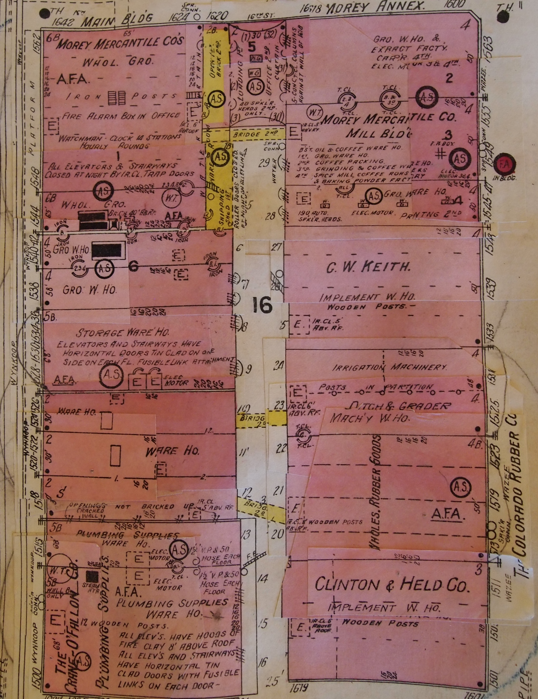

This project started in the spring of 2015 as an independent study in the geography program at the University of Colorado at Denver under supervision of Mike Hinke. The goal of this project was to explore how to combine different FOSS4G (Free and Open Source Software for Geospatial Applications) technologies into a single product. The theme chosen for this project was the historical urban past of Denver.
The Denver public library holds and amazing collection of Sanborn fire insurance map on its archives, such maps were photographed and then digitized in QGIS. Each building in Denver lower downtown was copied into digital format with its attributes such as building use, name of the business, number of floors and so on. However, the Denver Public Library only holds copies for 1925 and 1961 editions of such maps, luckily the University of Colorado at Boulder offers online copies from 1887 Sanborn maps.
One of the many original maps used in this project.
Note: If you are accessing this page from www.ricardooliveiragis.com the explanation below is not entirely true. In this case, the data is being served direct as a geoJson file given the fact that this web hosting does not offer support to postgreSQL/Geoserver stack. However, the final project was delivered following the explanation below.
To store this data we chose PostgreSQL given its proven stability and flexibility. To work with spatial data on this system we used PostGIS, which is the spatial extension for PostgreSQL. With our data stored in a stable RDBMS the next step was to serve it to the web, for this we used Geoserver. The last piece was to create the end-user platform where the data would be displayed, although there are many solid choices out there we decided that Leaflet provided all the key aspects in a neat package. Leaflet is stable, lightweight and more importantly vastly expandable.
The trickiest part on this project was to create a way of how leaflet would be able to render the data being served by Geoserver. However, given the fact that leaflet is written in javascript we could jQuery to connect the two pieces together. The AJAX call is shown below, note that once the call is succefully made we attribute the data to a specific variable to be used later on, in this case the dataset1.
$.ajax({
url: "http://localhost:8181/geoserver/PastDenver/ows?service=WFS&version=2.0.0&request=GetFeature&typeName=PastDenver:dataset3&maxFeatures=300&outputFormat=text/javascript&format_options=callback:getJson1",
dataType: 'jsonp',
jsonpCallback: 'getJson1',
success: function (response) {
WFSLayers = L.geoJson(response, {
style: function (feature) {
return {
weight: 5,
color: '#6e7ce8',
weight: 2,
opacity: 1,
dashArray: '3',
fillOpacity: 0.7,
};
},
onEachFeature: effects
}).addTo(dataset1);
}
});
Ricardo Oliveira - Geography and Enviromental Science - University of Colorado Denver
Contact me: ricardo.oliveira@ucdenver.edu